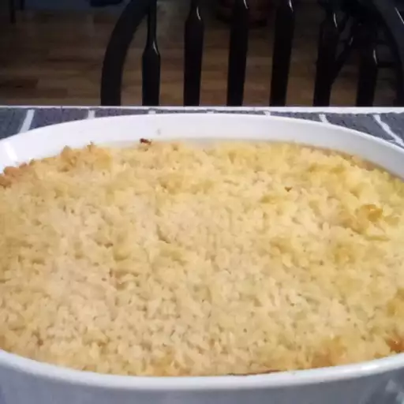

Home-Style Macaroni and Cheese

Description
A Cheddar and cream cheese sauce with a touch of Dijon is mixed with macaroni pasta, topped with bread crumbs, and baked.
The recipe takes 20 mins to prep, 30 mins to cook, for a total of 50 mins.
Makes 6 servings
Ingredients
- 7 ounces elbow macaroni
- 1/4 cup butter
- 3 tablespoons all-purpose flour
- 2 cups milk
- 1 (8 ounce) package cream cheese
- 4 slices canned jalapeno peppers, chopped
- 2 teaspoons Dijon mustard
- 1/2 teaspoon ground black pepper
- salt to taste
- 3 dashes hot sauce, or to taste
- 2 cups shredded Cheddar cheese
- 1 cup dry bread crumbs
- 2 tablespoons butter
- 2 tablespoons chopped fresh parsley
Steps
- Preheat oven to 400 degrees F (200 degrees C)
- Bring a large pot of lightly salted water to a boil. Cook elbow macaroni in the boiling water, stirring occasionally until cooked through but firm to the bite, 8 to 10 minutes. Drain.
- Melt 1/4 cup butter in a 3-quart saucepan over medium heat. Stir flour into melted butter and cook until smooth and bubbling, about 1 minute. Mix milk, cream cheese, jalapeno peppers, Dijon Mustard, black pepper, and salt into flour-butter mixture; cook, stirring occasionally, until sauce is thickened, about 5 minutes. Mix macaroni and cheddar cheese into sauce; pour into a 2-quart casserole dish.
- Mix bread curmbs, 2 tablespoons butter, and parsley together in a bowl; spread over macaroni and cheese.
- Bake in the preheated oven until golden brown, 15 to 20 minutes